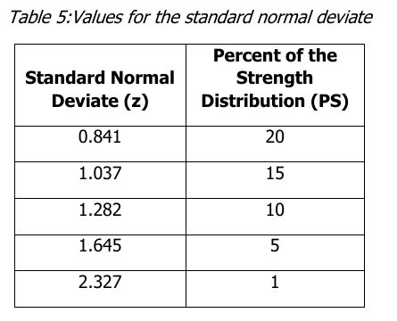

Design Inputs
Estimated Mean Modulus of Rupture · S′c
— MPa
Estimated Concrete Elastic Modulus · Ec
— GPa
Calculation Process
Follow the supplied procedure from compressive strength to estimated mean flexural strength. Each substitution below updates with your inputs.
- f′c
- Concrete compressive strength entered in MPa.
- Sc
- Estimated specification modulus of rupture (flexural strength).
- SDs
- Estimated standard deviation of flexural strength, in psi.
- S′c
- Estimated mean modulus of rupture used as the result.
Estimate Specification Flexural Strength
Sc (MPa) = 0.78 × √f′c
Note: Enter compressive strength in MPa for this correlation. Sc is an estimated flexural strength; compressive strength and flexural strength are different properties. The coefficient 0.78 belongs to the supplied procedure and its stated units.
Convert Sc to psi
Sc (psi) = Sc (MPa) × 145.038
Note: The supplied conversion is 1 MPa ≈ 145.038 psi. Keep Sc and SDs in the same units before adding the mean-strength adjustment.
Determine the Strength Standard Deviation
Variability Ratio = PS ÷ 100
SDs (psi) = Variability Ratio × Sc (psi)Note: Enter 10 for 10%; the formula uses 0.10. Reliability Linked mode sets PS = 100 − R using the same R–ZR relationship as Rigid Pavement. This requested coupling is not a measured coefficient of variation. Manual mode lets you enter the ratio directly. Neither mode uses the pavement's Overall Standard Deviation So as SDs.
Select the Positive z Magnitude
z = |Selected Standard Normal Deviate|
Note: Use the positive magnitude for the upward mean-strength adjustment. The supplied example converts −1.476 to +1.476. Reliability Linked mode looks up the negative pavement ZR and uses its positive magnitude here. In Manual mode, a strength-percentile table selection sets z only and does not change PS.
Adjust Specification Strength to Mean Strength
Adjustment (psi) = z × SDs
S′c (psi) = Sc (psi) + AdjustmentNote: The plus sign follows the supplied mean-strength procedure. With PS = 0 or z = 0, the adjustment is zero and S′c = Sc. This is an estimated mean, not a new compressive-strength value.
Estimate Concrete Elastic Modulus
f′c (psi) = f′c (MPa) × 145.038
Ec (psi) = 57,000 × √f′c (psi)
Ec (Million psi) = Ec (psi) ÷ 1,000,000Note: This equation uses compressive strength in psi, not Sc or S′c. Convert f′c before taking the square root. Ec is concrete stiffness; S′c is flexural strength. Their values are different even though both may be reported in psi.
Displayed intermediate values are rounded for readability; calculations keep full precision. In Reliability Linked mode, the transfer button sends f′c and R together to Rigid Pavement. In Manual mode, it sends f′c only; Rigid Pavement uses its existing R to derive PS and ZR, so its strength result may differ from the manual result. The supplied R–ZR table governs this tool; a different reliability-table selection in a saved pavement case can produce a different ZR.
| z | Percent of Strength Distribution |
|---|---|
| 0.841 | 20% |
| 1.037 | 15% |
| 1.282 | 10% |
| 1.645 | 5% |
| 2.327 | 1% |
The example uses custom z = 1.476 and variability PS = 10%. The table's 10% strength percentile has z = 1.282. Selecting a table percentile sets z; it does not change the variability ratio.
These estimates follow your supplied correlations. Use representative concrete testing or approved project inputs when available.
DPWH Manual · Concrete Strength Procedure
§1.5, p.14 gives S′c = Sc + z × SDs. Its worked values are Sc = 550 psi, PS = 15%, z = 1.037, giving 635.55 psi (rounded). Table 5 is a strength-distribution table; it does not establish that PS must equal 100 − pavement R. Reliability Linked mode retains your requested coupling, while Manual mode allows independent PS and z. The f′c-to-flexural-strength correlation remains from your supplied worksheet. §1.8 confirms Ec = 57,000√f′c with f′c in psi.
